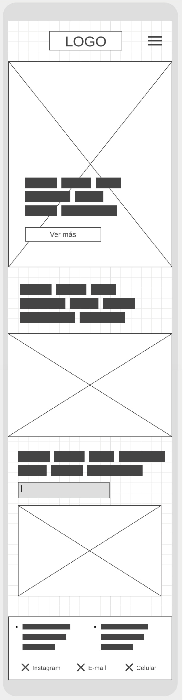

Arquetipos de Usuarios
María
Ella es diseñadora de interiores. Ingresa a la página, después de recorrer muchas tiendas online, buscando con ojo crítico un producto para sorprender a su nuevo cliente y crear un ambiente especial en su nueva casa en el Lago Ranco.
Juan
Juan está en búsqueda de un regalo para sus padres. Ingresa a Cucao buscando algo significativo, cuando era niño siempre veraneaba con su familia en Panguipulli, por lo que el mapa de este lugar le trae lindos recuerdos.
Andrés
Andrés vive en Puerto Varas y la decoración de su casa es uno de sus hobbies. Le gusta que sea siempre un lugar acogedor y cálido para recibir a sus invitados. Llega a la página en busca de un cuadro para remodelar su living.
Moodboard

Boceto de portada

Boceto de página interior